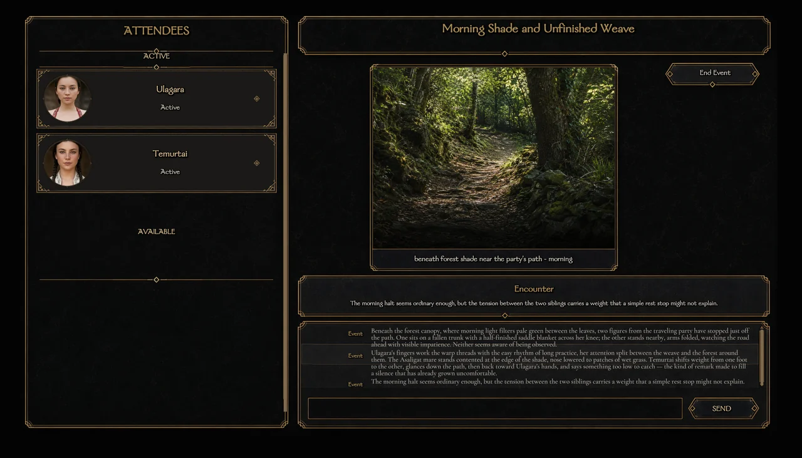

Events and NPC personal lives
Join celebrations and encounters, follow personal stories, and respond to changing plans.
Town events and tournament celebrations
Preview included#When a social event is announced, visit the named town and use Attend the announced Bannerlord Reign social event. If you leave an active event, its Return option can reopen it while available. These are opportunities with closing windows; an announcement is not a permanent quest marker.
Culture shapes the gathering. You may encounter feasts, fairs, dances, performances, contests, or outings. Events proceed through phases, giving different opportunities for introductions, group conversation, competition, or quieter exchanges. Tournament celebrations connect the local social scene with the winner and prize.
Participation can develop relationships and award modest player skill experience. A real exchange matters; repeatedly opening a screen does not count as participation. See Participation XP for its settings.

Wilderness encounters and personal matters
Preview included#While traveling outside settlements, you may encounter a contextual scene involving eligible party heroes. Terrain, time, and companions affect its presentation. You can investigate, talk, apologize, challenge, avoid the issue, or end the exchange according to the situation.
These scenes can also bring a developing rivalry, romance, shared secret, or obligation into the open. A private concern is different from a public court matter. Events do not need to occur during every journey, and the game avoids opening them over battles, sieges, or other unsafe interfaces.

Approach, invitations, and personal stories
Preview included#With NPC Lives enabled, people have activities and may be busy, relaxed, worried, or ready to ask for help. Companions and eligible guests actually accompanying you can invite you into personal experiences. Being in the same kingdom is not enough to receive every private invitation.
Brief moments, outings, personal leave, independent activities, and longer story arcs have different purposes. Trust affects what someone is willing to share. Follow the stated objective, the agreed people, and any revealed Story Location in the relevant settlement. Meaningful conversation and actual activities move a story forward; repeating a password or praise does not guarantee progress.
Some stories involve a practice duel, a hideout, an item, or travel. Those require the real game outcome. A story describing success cannot grant a victory, a reward, or a completed mission by itself. Lasting experiences, belongings, pets, and character development are intended to remain part of later conversation when actually established.
Personal leave and changing plans
Preview included#An NPC asking for leave may have a private reason. You can discuss it, ask them to wait, or negotiate the arrangement. Repeating the same argument does not create unlimited persuasion credit. They can remain unwilling to disclose a concern or accept your request.
Agree separately on any delay before departure and the time away after departure. Accepting time away does not permanently dismiss the character or recruit a replacement. Native return and duty restoration belong to the agreement's lifecycle, so inspect its status if the person seems overdue.
Turning off new NPC Lives invitations stops new starts; existing commitments and safe recovery may still need to finish. It does not erase memories or make an accepted journey vanish.
Attention, jealousy, invitations, and rescues
Preview included#People can notice you giving attention to others without overhearing the private contents. Neglected acquaintances may ask to talk; their temperament and what they actually witnessed affect the complaint. An approach is not proof of romance or wrongdoing.
You may also receive invitations from local nobles, friendly patrol interceptions, or a chance to speak after a battle or prison rescue. These use the actual people and circumstances. Rescue conversation is separate from the native release or reward.
Options → Player attention and NPC approaches has a master switch and separate preferences for attention, jealousy/neglect, keep invitations, patrol interceptions, and battle or prison rescue dialogue. Turning them off changes new approaches rather than undoing completed rescues.